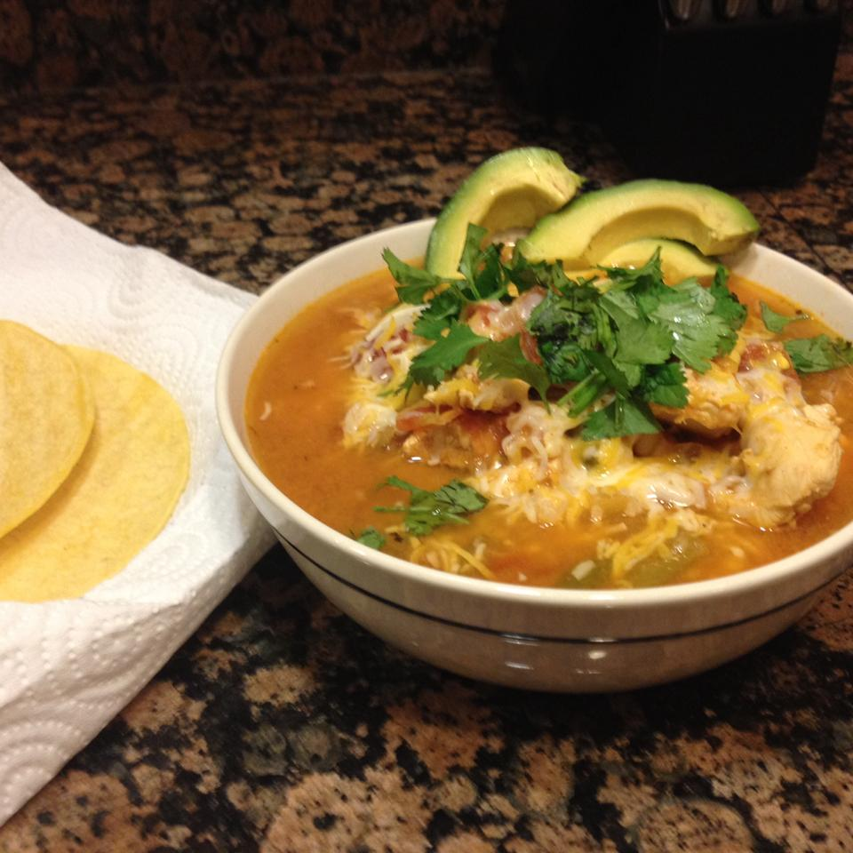

Chicken Tortilla Soup

Description
This a recipe for Chicken tortilla soup. It has chicken, diced tomatoes, and plenty
of other tasty seasonings.
This recipe will surely bring some Southwest flavor onto your dinner table!
Ingredients
- 1 cup chopped onion
- 3 cups chicken broth
- 1 (14.5 ounce) can diced tomatoes with green chile peppers
- 1 envelope taco seasosing
- 1 1/2 pounds skinless, boneless chicken breast meat-cubed
- 2 tablespoons cornstarch
- 1/4 cup cold water
- 1/4 cup shredded Mexican cheese blend
- 1 tablespoon chopped fresh cilantro (Optional)
Steps
- Combine onion, chicken broth, tomatoes, and taco seasoning in a large sauce pan; bring to a boil over medium heat.
Stir in chicken; reduce heat to low, cover, and simmer until chicken is no longer pink, 4 to 6 minutes.
Mix cornstarch and water in a small bowl until smooth; gradually stir into soup.
- Bring soup to a boil over medium-high heat; cook, stirring occasionally, until thickened, about 1 minute. Top with Mexican cheese and cilantro.